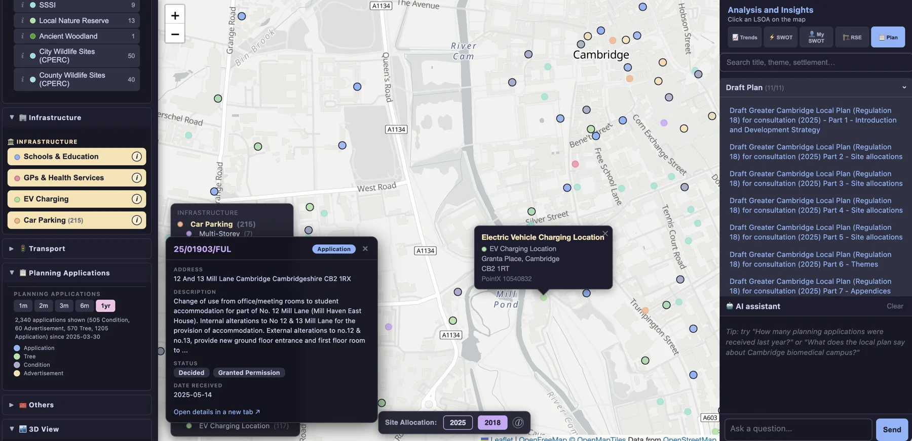

One map and one assistant for Greater Cambridge's evidence base, Local Plan and planning applications. We are forming a consortium to keep building it.
Access code greatercam

The next stage focuses on four areas. Add your own suggestions below; every suggestion is visible to the group.
Benchmark the assistant's answers against planners' own answers, and make sure every cited passage supports what the answer says.
Answer a planner with the policy references and a resident in plain language, from the same evidence.
When the documents do not answer a question, say so and point to where a person would look next.
Show the stages from local plan to allocation, application, approval and building, and where the public can have a say at each.
Turn a proposal into a short account of what will be built, where, when, and with which schools, health care and transport.
Let residents enter a street or postcode and see the applications, allocations and services around them.
Let residents comment on a proposal next to the evidence about it, with moderation so the forum stays useful.
Summarise what residents raise, by topic and by place, so planners receive the comments as structured evidence.
Show residents how the points they raised were considered in the decision.
Tell residents which consultations and applications affect where they live, and when each one closes.
Help residents see which planning matters a comment can address and which policies apply, while the response stays in their own words.
Make consultation material readable on a phone, in plain language and in other languages, so taking part does not depend on time or expertise.
How PLATO connects with the Urban Modelling Research Group's four research focuses. Tell us about your own work below.
Site allocations, applications and growth areas next to transport and infrastructure layers, for work on how land and transport develop together.
Plan documents and applications with dates and stages, for studying how policies are written, applied and what they change.
A shared evidence base and map for model inputs, and a public front end for showing model scenarios.
Language models over planning text and a 3D view of the city, as steps towards a planning digital twin.
The consortium needs data, domain expertise, methods, software, test sites and funding ideas. Say what you would like to contribute; your entry is visible to the group. To follow up privately, email Jerry.
Tick the features you have tried, and for each say what you liked and what could improve. Your name is optional, and your feedback is visible to the group.
Updates every 20 seconds.